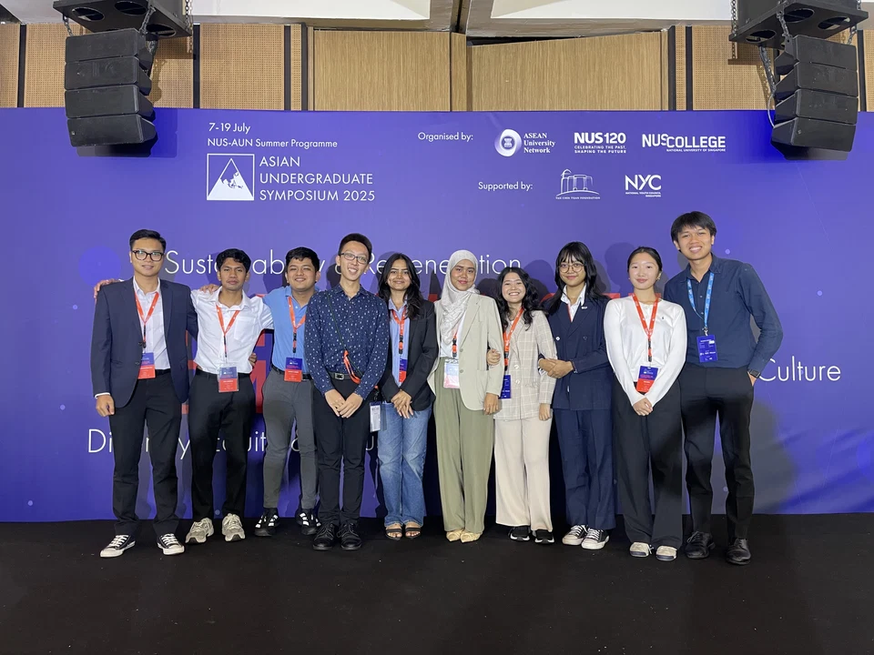

🇸🇬 SINGAPORE · 2025National University of Singapore · AUS 2025
I joined an international project team during the Asian Undergraduate Symposium and also attended Regen Asia Summit. I contributed to project coordination and communication, gaining experience in teamwork across cultures.